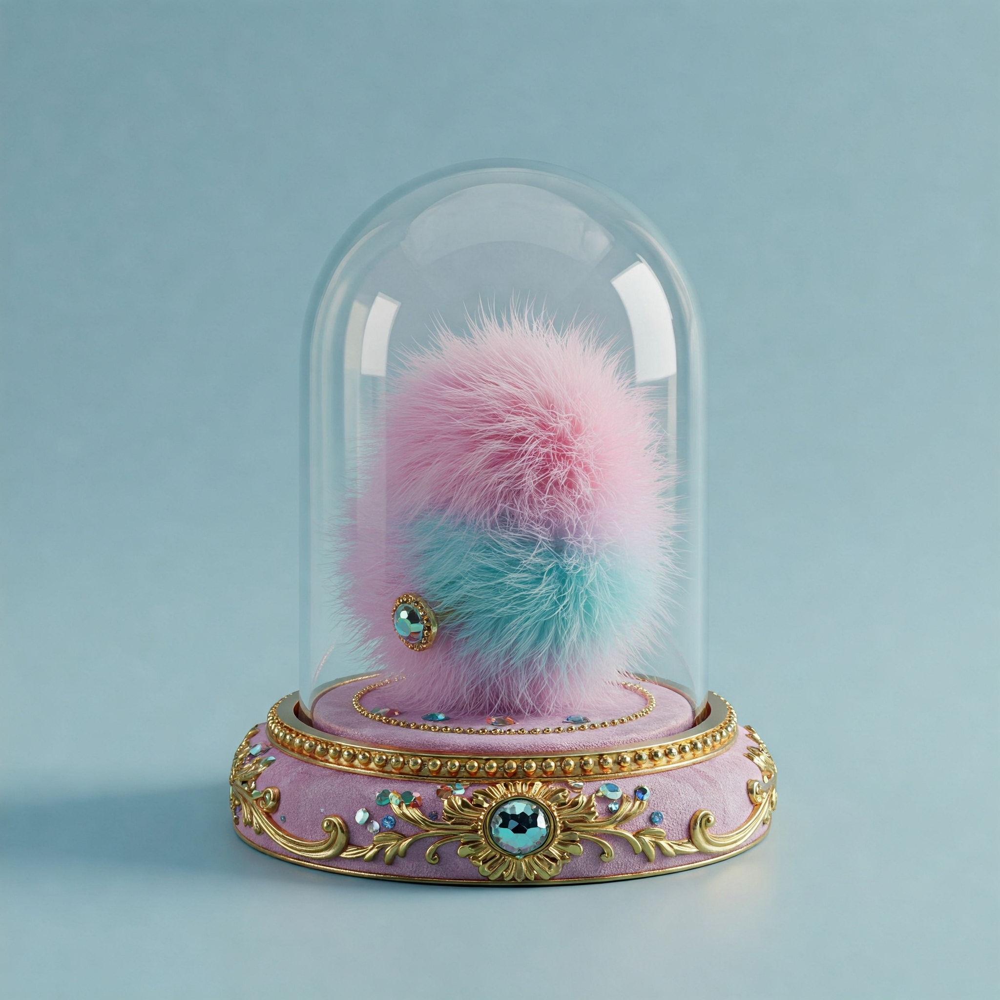

🌸 “Dulce Nube de Azúcar Bebé”
Clasificación: Pelusa de Ombligo Gourmet – Edición Neonatal.
Origen: Ombliguito de Celestina Marisol, 7 semanas de edad, nacida en una cuna deterciopelo hipoalergénico con difusor de lavanda y playlist de Chopin.
Descripción del Barón: Ah... la Dulce Nube de Azúcar Bebé... Un espécimen absolutamente celestial. Su textura es comparable a un suspiro atrapado entre los pliegues de una manta tejida por unicornios miopes. La paleta bicromática rosa pastel y celeste es una oda a los primeros bostezos de la existencia. Su forma ligeramente ovalada revela un crecimiento libre, sin traumas ni roces de botones.
Nota aromática: Presenta una fragancia suave a leche tibia y talco con fondo de siesta, digna de una guardería de gala. Su broche turquesa incrustado no es un simple detalle, sino un sello de nobleza lanuda infantil, heredado de un linaje famoso por pelusas tan suaves como la conciencia de un panda.